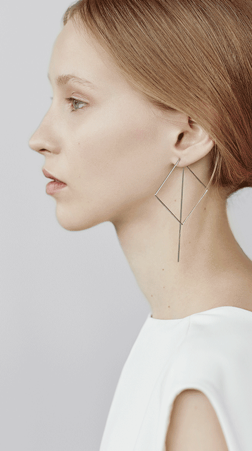

<!DOCTYPE html>
<!--[if lt IE 7]>      <html class="no-js lt-ie9 lt-ie8 lt-ie7"> <![endif]-->
<!--[if IE 7]>         <html class="no-js lt-ie9 lt-ie8"> <![endif]-->
<!--[if IE 8]>         <html class="no-js lt-ie9"> <![endif]-->
<!--[if gt IE 8]><!--> <html class="no-js"> <!--<![endif]-->
  <head>
    <meta charset="utf-8">
    <meta name="viewport" content="width=device-width, initial-scale=1">
    <meta http-equiv="X-UA-Compatible" content="IE=edge">
    <meta name="description" content="Agata Bielen PSD to HTML5">
    <meta name="keywords" content="HTML,CSS,PSD,Template">
    <meta name="author" content="Lunia Mage">
    <title>Collection 1 | Page 1</title>
    <link rel="stylesheet" href="https://use.typekit.net/oth5uip.css">
    <link rel="stylesheet" href="../assets/css/rlpage1.css">
    <!-- <link rel="stylesheet" href="../assets/css/body.css"> -->
  </head>
  <body>
    <!--[if lt IE 7]>
      <p class="browsehappy">You are using an <strong>outdated</strong> browser. Please <a href="#">upgrade your browser</a> to improve your experience.</p>
    <![endif]-->
      <div class="grid-container">
 
      <section class="left-side">
          <h1>Right Line</h1>
        <div class="flex-container">
          <div class="line-long"></div>
          <p class="aside-sm-right-pg1">
              The line broken, bent and bonded in space, creates three-dimensional forms. This very simple statement on geometry and technique is one of Agata Bieleń’s elemental design principles. And the Poland based jewellery designer makes sure to come closer and closer  to this principle with every collection she creates. For Spring/Summer 2016 she focusses on the optical illusion created by fine lines running through space, more broken than bent or bonded. That’s why the collection bears the name Right Line.
          </p>
        </div>
      </section>

      <section class="right-side"> 
        <div class="bkg-right-pg1">
          <div class="flex-container">
            <div ></div>
            
            
          </div>
      </div>
      </section>
     
</div> <!-- end container -->


    <script src="" async defer></script>
  </body>
</html>